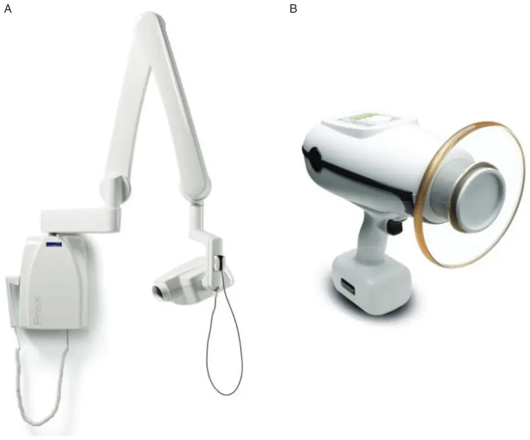
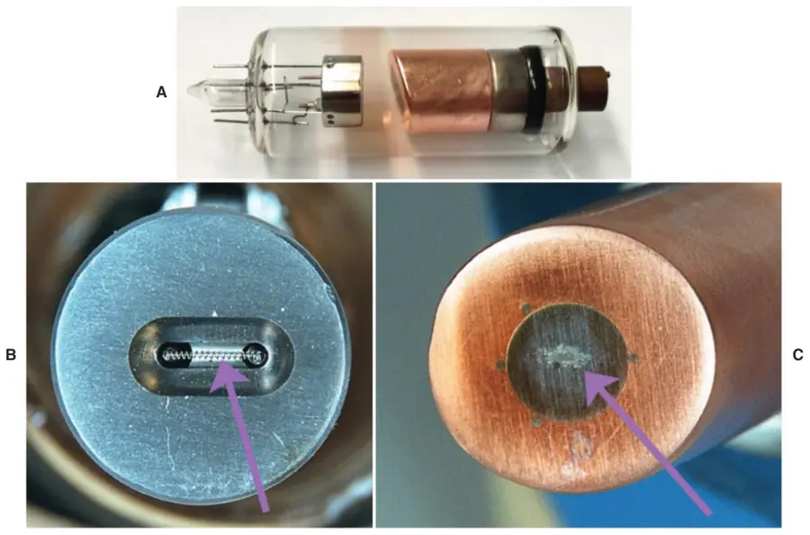

نسخه استخراجشده؛ ترجمه یا تأیید علمی انجام نشده است. وضعیت: captured
کار دستگاه در یک جمله: «دستگاههای پرتو ایکس، پرتوهایی میسازند که از بافتهای بیمار میگذرند و به یک گیرندهی دیجیتال یا فیلم برخورد میکنند تا تصویر رادیوگرافی بسازند.»

و اجزای اصلیاش: «لولهی پرتو ایکس و تغذیهاش، که درون هد لوله قرار دارند.» و در دستگاههای داخلدهانی، «هد لوله بهطور معمول با یک بازو نگه داشته میشود که معمولاً روی دیوار نصب است».
و درون هد چه چیزهایی هست؟ «یک مادهی عایق الکتریکی، معمولاً روغن، لوله و ترانسفورمرها را احاطه میکند.» و یک نکتهی طراحی مهم: «اغلب، لوله در عمق هد فرورفته است تا فاصلهی منبع تا جسم افزایش یابد و اعوجاج کمینه شود.»
و در دستگاههای دستی: «منبع تغذیه با یک باتری قابل شارژ فراهم میشود و پنل کنترل در خود دستگاه دستی یکپارچه شده است.»
تعریف پایه: «یک لولهی پرتو ایکس از یک کاتد و یک آند ساخته شده که درون یک پوشش شیشهای خلأشده جای دارند.» و فرایندش: «برای تولید پرتو ایکس، الکترونها از فیلامان در کاتد به هدف در آند جریان مییابند، جایی که انرژی برخی از الکترونها به پرتو ایکس تبدیل میشود.»
دو جزء دارد: فیلامان و فوکوسینگکاپ.
و فیلامان: «منبع الکترونها درون لوله است. یک کویل سیم تنگستن با قطر تقریباً ۲ میلیمتر و طول ۱ سانتیمتر یا کمتر.» و یک افزودنی کلیدی: «فیلامانها بهطور معمول تقریباً ۱ درصد توریم دارند، که رهایش الکترون از سیم گرمشده را بهشدت افزایش میدهد.»
و چگونه کار میکند؟ «فیلامان با یک منبع ولتاژ پایین تا حد تابندگی گرم میشود و الکترونها را با نرخی متناسب با دمای فیلامان میتاباند.»
و فوکوسینگکاپ: «یک کاسهی مقعر مولیبدنی با بار منفی.» و کارش: «شکل سهموی فوکوسینگکاپ، الکترونهای تابیدهشده از فیلامان را بهصورت الکترواستاتیک در یک باریکهی باریک متمرکز میکند و به سمت ناحیهی مستطیلی کوچکی روی آند به نام نقطهی کانونی هدایت میکند.»
و چرا الکترونها حرکت میکنند؟ «چون هم از کاتد با بار منفی دفع میشوند و هم به آند با بار مثبت جذب.»
و چرا لوله خلأ میشود؟ دو دلیل: «برای پیشگیری از برخورد الکترونهای پرسرعت با مولکولهای گاز، که سرعتشان را بهطور معناداری کم میکرد.» و «خلأ همچنین از اکسیداسیون یا «سوختن» فیلامان پیشگیری میکند.»
ساختار آند: «یک هدف تنگستنی جاسازیشده در یک ساقهی مسی.» و کارش: «تبدیل انرژی جنبشی الکترونهای برخوردکننده به فوتونهای پرتو ایکس.»

و اکنون یکی از تکاندهندهترین اعداد لولهی پرتو ایکس: «تبدیل انرژی جنبشی الکترونها به فوتون پرتو ایکس فرایندی ناکارآمد است، با بیش از ۹۹ درصد انرژی جنبشی الکترون که به گرما تبدیل میشود.»
«تنگستن عنصری است که چند ویژگی یک مادهی هدف آرمانی را دارد:»
و چرا در مس جاسازی میشود؟ «هدف تنگستنی بهطور معمول در یک بلوک بزرگ مس جاسازی میشود، که بهعنوان رسانای گرمایی عمل میکند تا گرما را از هدف تنگستنی بردارد و خطر ذوب شدن هدف را کم کند.»
تعریفش: «ناحیهای روی هدف که فوکوسینگکاپ الکترونها را به آن هدایت میکند و پرتو ایکس از آن تولید میشود.»
و چرا مهم است؟ «اندازهی نقطهی کانونی یک پارامتر فنی مهم کیفیت تصویر است — نقطهی کانونی کوچکتر، تصویر تیزتری میدهد.» و اندازهاش: «برای دستگاههای دندانی، پانورامیک و CBCT، از ۰٫۴ تا ۰٫۸ میلیمتر است، بسته به سازنده و مدل.»
و محدودیت کوچک کردنش: «یک محدودیت در کاهش اندازهی نقطهی کانونی، گرمای تولیدشده است.» و برای غلبه بر این محدودیت، «لولههای پرتو ایکس از یکی از دو آرایش آند استفاده میکنند».
روش: «هدف با زاویهای نسبت به باریکهی الکترونی قرار میگیرد. بهطور معمول، هدف تقریباً ۲۰ درجه نسبت به پرتو مرکزی شیب دارد.»
و اکنون ترفند: «وقتی از میان حلقهی هدفگیری نگاه میشود، ناحیهای که فوتونهای پرتو مفید از آن سرچشمه میگیرند کوچکتر به نظر میرسد، و نقطهی کانونی مؤثر را کوچکتر از اندازهی واقعی نقطهی کانونی میکند.»
و سود دوگانهاش: «این امکان تولید پرتو از ناحیهای بزرگتر را میدهد، که توزیع بهتر گرما را ممکن میسازد، در حالی که مزیتهای کیفیت تصویر یک نقطهی کانونی کوچک حفظ میشود.»
و عددهای یک نمونهی رایج: نقطهی کانونی مؤثر تقریباً ۱ در ۱ میلیمتر است، در برابر نقطهی کانونی واقعی که تقریباً ۱ در ۳ میلیمتر است. و نتیجه: «منبع ظاهری کوچکتر پرتو و افزایش تیزی تصویر، با اندازهی واقعی بزرگتر برای بهبود دفع گرما.»
روش: «هدف تنگستنی به شکل یک دیسک پخدار است که حین دورهی تولید پرتو میچرخد. در نتیجه، الکترونها به نواحی پیاپی دیسک هدف برخورد میکنند و گرما را روی ناحیهی گستردهای از دیسک توزیع میکنند.»
ولی نکتهی کلیدی: «در هر لحظهی معین، پرتو ایکس از یک نقطهی کوچک روی هدف تولید میشود.» — یعنی تیزی تصویر حفظ میشود در حالی که گرما پخش میشود.
و سودش عددی است: «لولههای با آند چرخان میتوانند با پرتوگیریهای طولانیتر و با جریانهای لولهی بالاتر ۱۰۰ تا ۵۰۰ میلیآمپر به کار روند، که ۱۰ تا ۵۰ برابر آن چیزی است که با هدف ثابت ممکن است.»
و ساختار مکانیکیاش: «هدف و روتور (آرمیچر) موتور درون لوله قرار دارند، و کویلهای استاتور — که روتور را با تقریباً ۳۰۰۰ دور در دقیقه میچرخانند — بیرون لولهاند.»
و کجا به کار میروند؟ «آندهای چرخان در دستگاههای داخلدهانی، پانورامیک و سفالومتریک به کار نمیروند؛ در برخی دستگاههای CBCT به کار میروند؛ و همیشه در دستگاههای MDCT، که خروجی پرتویی بالا برای پرتوگیریهای طولانی و پیوسته میخواهند.»
نوع سؤال: ساخت کلمه · 3 خانه
حروف منبع: — · پایین · دما